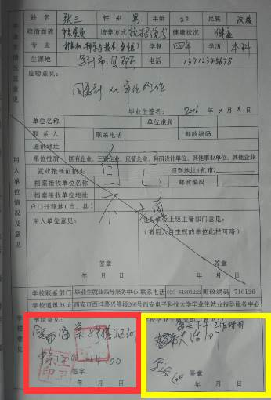
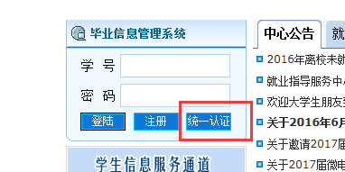
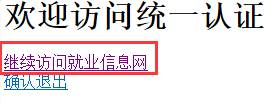
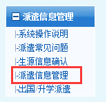

各位2017届计算机学院毕业生：
为了各位同学更好的联系公司，找到心仪的工作，并签好三方协议，计算机学院现公布《毕业生推荐书》和“三方协议”盖章等事务的处理方法和说明，请各位同学认真阅读，避免出现不必要的失误和纰漏。
所有有关就业的盖章和推荐表的填写等工作均在办公时刻进行，如下。
办公地点：计算机学院导员办公室门口（海棠8号楼I区301）
办公时间：法定工作日12:50—13:30，过期不候。每天中午12：50开始处理当天预约。当日12：40后再进行预约的同学需在下一个工作日12:50前来办理（系统会提示时间日期）。
注：所有业务办理均需要在三思网站上进行预约，否则不予处理，预约可以随时进行，处理需要等到法定工作日。
注：学生必须完成本说明中所有步骤，否则后果自负。
注：保研的学生不需要、也不能使用该预约系统。
《三方协议》返回提交说明
三方协议所有章子都已盖好、所有事务都已经处理完（见后半部分处理方式）之后，请把其中一份在工作时间交至导员办公室，也同样需要预约，预约方法同《毕业生推荐表》，然后在办公时间交到导员办公室。
《普通高等学校毕业生就业协议书》（三方协议）业务说明
注：接受单位名称请与公司确认核对好之后再在系统提交，除了以下两种情况，管理员不接受预约提交之后修改公司名称：
1、系统预约时填写错误，并且状态为“未处理”，此时可以直接去导员办公室联系管理员当场改动。
2、已经提交完并处理完，但公司名称填写错误，或因其他原因公司要求修改名称，此时应该拿出证明材料，联系三思管理员修改。
3、即一旦在系统提交，均不能自行修改，需要联系管理员，违约需要在2017年5月份统一处理。
内容填写说明
《普通高等学校毕业生就业协议书》填写如下图说明：
不清楚地方标注：培养方式：统招统分，专业：写自己的，图上写的是计算机科学与技术（卓越），生源地：写到市、县，应聘意见及签名：同意到xx单位工作。

除红色黄色部分外，其余内容均按样图进行填写。
红色部分：
预约完成后，将上面需要个人填写的信息填写完整，填写不完整者不给盖章，并携带如下材料前往海棠8号楼I区301办理。
注：有录取函需携带录取函及复印件，若接收单位未发录取函，但在三方协议中“用人单位意见”或“用人单位上级主管意见”处已盖章，也可前来办公地点盖章。
黄色部分（该部分必须做，否则就业办不给盖章）：

输入账号密码后点击“继续访问就业信息网”，如下所示：

选择“派遣信息管理”，进行相关内容的填写。
